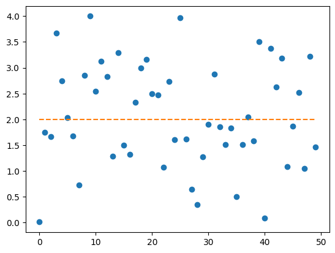
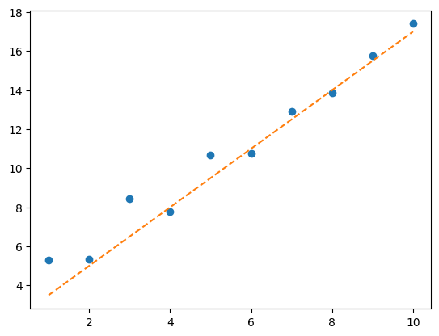
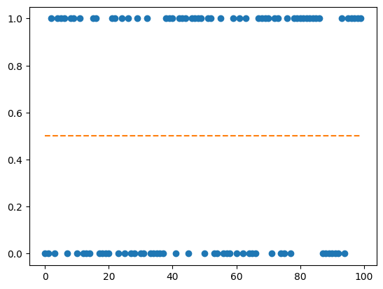
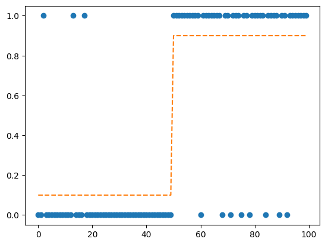
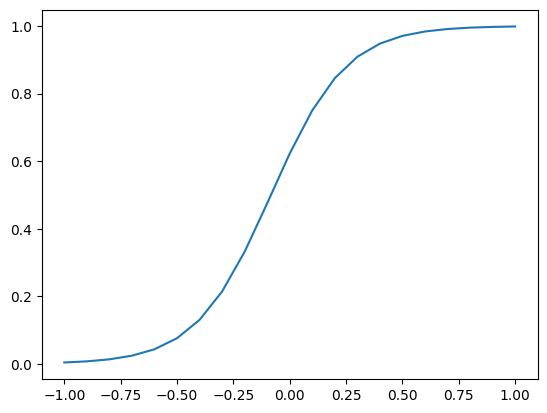
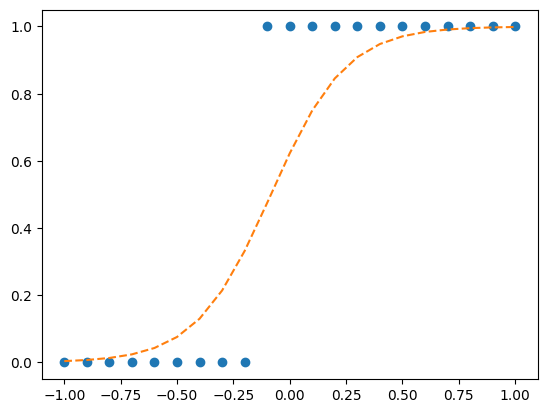

import torch
import matplotlib.pyplot as plt02wk: torch (2)

1. 강의영상
2. Imports
3. torch
E. 차원, 전환
A = torch.tensor([[1,2,3,4],[2,2,1,0],[0,1,-1,0],[3,1,-1,3]]).float()
Atensor([[ 1., 2., 3., 4.],
[ 2., 2., 1., 0.],
[ 0., 1., -1., 0.],
[ 3., 1., -1., 3.]])- 미묘한 차이
A[0,:]tensor([1., 2., 3., 4.])A[[0],:]tensor([[1., 2., 3., 4.]])A[:,0]tensor([1., 2., 0., 3.])A[:,[0]]tensor([[1.],
[2.],
[0.],
[3.]])- 0차원, 1차원, 2차원…
torch.tensor([[1,2,3],[1,2,3]]), torch.tensor([[1,2,3],[1,2,3]]).shape(tensor([[1, 2, 3],
[1, 2, 3]]),
torch.Size([2, 3]))torch.tensor([[1,2,3]]), torch.tensor([[1,2,3]]).shape(tensor([[1, 2, 3]]), torch.Size([1, 3]))torch.tensor([[1],[2],[3]]), torch.tensor([[1],[2],[3]]).shape(tensor([[1],
[2],
[3]]),
torch.Size([3, 1]))torch.tensor([1,2,3]), torch.tensor([1,2,3]).shape(tensor([1, 2, 3]), torch.Size([3]))torch.tensor([1]), torch.tensor([1]).shape(tensor([1]), torch.Size([1]))torch.tensor(1), torch.tensor(1).shape(tensor(1), torch.Size([]))- reshape
a = torch.tensor([1,2,3,4,5,6])
atensor([1, 2, 3, 4, 5, 6])a.reshape(1,6)tensor([[1, 2, 3, 4, 5, 6]])a.reshape(6,1)tensor([[1],
[2],
[3],
[4],
[5],
[6]])a.reshape(3,2)tensor([[1, 2],
[3, 4],
[5, 6]])# reshape 고급
a = torch.tensor([[1,2,3],[4,5,6]])
atensor([[1, 2, 3],
[4, 5, 6]])task1: [6,1]로 만들기
a.reshape(6,1)tensor([[1],
[2],
[3],
[4],
[5],
[6]])a.reshape(6,-1)tensor([[1],
[2],
[3],
[4],
[5],
[6]])a.reshape(-1,1)tensor([[1],
[2],
[3],
[4],
[5],
[6]])task2: [3,2]로 만들기
a.reshape(3,2)tensor([[1, 2],
[3, 4],
[5, 6]])a.reshape(3,-1)tensor([[1, 2],
[3, 4],
[5, 6]])a.reshape(-1,2)tensor([[1, 2],
[3, 4],
[5, 6]])task3: 6으로 만들기
a.reshape(6)tensor([1, 2, 3, 4, 5, 6])a.reshape(-1).shapetorch.Size([6])#
- 전치행렬 만들어보기
a = torch.tensor([[1,2,3],[2,3,4]])
atensor([[1, 2, 3],
[2, 3, 4]])a.Ttensor([[1, 2],
[2, 3],
[3, 4]])a.reshape(3,2) # 내마음대로 안되네tensor([[1, 2],
[3, 2],
[3, 4]])torch.einsum('ij -> ji', a)tensor([[1, 2],
[2, 3],
[3, 4]])a.permute(1,0)tensor([[1, 2],
[2, 3],
[3, 4]])- 벡터, col-vec, row-vec, 매트릭스
(1) 길이가3인벡터
- \({\bf x}=[1,2,3]\)
(2) 차원이 (1,3)인 matrix = 길이가 3인 row-vec
- \({\bf x}=\begin{bmatrix} 1 & 2 & 3 \end{bmatrix}\)
(3) 차원이 (3,1)인 matrix = 길이가 3인 col-vec
- \({\bf x}=\begin{bmatrix} 1 \\ 2 \\ 3 \end{bmatrix}=\begin{bmatrix} 1 & 2 & 3 \end{bmatrix}^\top\)
참고
- 수학에서 벡터 \({\bf a}\), \({\bf b}\)는 보통 특별한 언급이 없으면 column-vector로 인식하는 경우가 많다. 이럴 경우 두 벡터의 내적은 \({\bf a}^\top {\bf b}\)와 같이 표현된다.
- ref: https://en.wikipedia.org/wiki/Dot_product
- .item()
a = torch.tensor(32)
atensor(32)a.item()32F. @의 유연성
- 아래의 행렬곱은 가능하다.
- (2,2) @ (2,1) –> (2,1)
- (1,2) @ (2,2) –> (1,2)
a = torch.tensor([1,2,3,4]).reshape(2,2)
b = torch.tensor([1,2]).reshape(2,1)
a@btensor([[ 5],
[11]])a = torch.tensor([1,2,3,4]).reshape(2,2)
b = torch.tensor([1,2]).reshape(1,2)
b@atensor([[ 7, 10]])- 당연히 아래는 성립안한다.
- (2,1) @ (2,2) –> X
- (2,2) @ (1,2) –> X
a = torch.tensor([1,2,3,4]).reshape(2,2)
b = torch.tensor([1,2]).reshape(2,1)
b@aRuntimeError: mat1 and mat2 shapes cannot be multiplied (2x1 and 2x2)a = torch.tensor([1,2,3,4]).reshape(2,2)
b = torch.tensor([1,2]).reshape(1,2)
a@b- 그렇다면 아래는 어떨까?
- 2 @ (2,2) –> 2
- (2,2) @ 2 –> 2
a = torch.tensor([1,2,3,4]).reshape(2,2)
b = torch.tensor([1,2])
b@atensor([ 7, 10])a@btensor([ 5, 11])# 내적의 계산: \({\bf a} = [1,2,3]\), \({\bf b} = [4,5,6]\) 일경우 \({\bf a} \cdot {\bf b}\)를 계산해보자.
계산방법1
a = torch.tensor([1,2,3])
b = torch.tensor([4,5,6])
(a*b).sum()tensor(32)계산방법2
a = torch.tensor([1,2,3]).reshape(3,1)
b = torch.tensor([4,5,6]).reshape(3,1)
a.T @ b tensor([[32]])계산방법3
a = torch.tensor([1,2,3])
b = torch.tensor([4,5,6])
a@btensor(32)a.T@b/tmp/ipykernel_1356693/842082260.py:1: UserWarning: The use of `x.T` on tensors of dimension other than 2 to reverse their shape is deprecated and it will throw an error in a future release. Consider `x.mT` to transpose batches of matrices or `x.permute(*torch.arange(x.ndim - 1, -1, -1))` to reverse the dimensions of a tensor. (Triggered internally at /pytorch/aten/src/ATen/native/TensorShape.cpp:4480.)
a.T@btensor(32)a@b.Ttensor(32)a.T@b.Ttensor(32)- 좋은건가? 아니면 헷갈리는건가?
- 아는상태에서 쓰면 좋은것이고 모르는 상태에서 이런걸 보면 혼란스러울 수 있음.
#
- 결론: @의 유연성으로 인해서 불편할때도 있고, 편리할때도 있다.
*불편한점1 – 헷갈릴경우
\({\bf a} = \begin{bmatrix} 1 \\ 2 \\ 3 \end{bmatrix}\), \({\bf b} = \begin{bmatrix} 4 \\ 5 \\ 6 \end{bmatrix}\) 일경우 \({\bf a}^\top \cdot {\bf b}\)를 계산하고 싶다면??
a = torch.tensor([1,2,3])
b = torch.tensor([4,5,6])
a@b, a.T@b, a@b.T, a.T@b.T(tensor(32), tensor(32), tensor(32), tensor(32))편리한듯 하지만 헷갈리기도 하다.
*불편한점2 – 의도와 다르게 동작할 경우
\({\bf a} = \begin{bmatrix} 1 \\ 2 \\ 3 \end{bmatrix}\), \({\bf b} = \begin{bmatrix} 4 \\ 5 \\ 6 \end{bmatrix}\) 일경우 \({\bf a} \cdot {\bf b}^\top\)를 계산하고 싶다면??
a = torch.tensor([1,2,3])
b = torch.tensor([4,5,6])
a@b, a.T@b, a@b.T, a.T@b.T(tensor(32), tensor(32), tensor(32), tensor(32))무슨짓을 해도 실패함. 결국 명시적으로 쓰는 수밖에 없음.
a = torch.tensor([1,2,3]).reshape(-1,1)
b = torch.tensor([4,5,6]).reshape(-1,1)a @ b.Ttensor([[ 4, 5, 6],
[ 8, 10, 12],
[12, 15, 18]])G. 다양한 array 생성
arange
- 정수배열을 생성
torch.arange(10)tensor([0, 1, 2, 3, 4, 5, 6, 7, 8, 9])- 위의 코드는 아래와 같음
torch.arange(0,10)tensor([0, 1, 2, 3, 4, 5, 6, 7, 8, 9])- 시작점을 다르게 할 수 있음.
torch.arange(1,10)tensor([1, 2, 3, 4, 5, 6, 7, 8, 9])- 간격을 다르게할수도있음
torch.arange(1,10,2)tensor([1, 3, 5, 7, 9])linspace
- 등간격으로 숫자생성
torch.linspace(0,1,11)tensor([0.0000, 0.1000, 0.2000, 0.3000, 0.4000, 0.5000, 0.6000, 0.7000, 0.8000,
0.9000, 1.0000])- 이런식으로 해도 상관없긴함.
torch.arange(1,11)/10tensor([0.1000, 0.2000, 0.3000, 0.4000, 0.5000, 0.6000, 0.7000, 0.8000, 0.9000,
1.0000])zeros, ones
- 모두 0이 채워진 배열생섬
torch.zeros(5)tensor([0., 0., 0., 0., 0.])- 행렬을 생성할수도있음
torch.zeros((5,5))tensor([[0., 0., 0., 0., 0.],
[0., 0., 0., 0., 0.],
[0., 0., 0., 0., 0.],
[0., 0., 0., 0., 0.],
[0., 0., 0., 0., 0.]])- 차원은 (5,5) 로 전달하든 [5,5]로 전달하든 상관없음
torch.zeros([5,5])tensor([[0., 0., 0., 0., 0.],
[0., 0., 0., 0., 0.],
[0., 0., 0., 0., 0.],
[0., 0., 0., 0., 0.],
[0., 0., 0., 0., 0.]])- ones도 마찬가지
torch.ones(5),torch.ones((5,5)), torch.ones([5,5])(tensor([1., 1., 1., 1., 1.]),
tensor([[1., 1., 1., 1., 1.],
[1., 1., 1., 1., 1.],
[1., 1., 1., 1., 1.],
[1., 1., 1., 1., 1.],
[1., 1., 1., 1., 1.]]),
tensor([[1., 1., 1., 1., 1.],
[1., 1., 1., 1., 1.],
[1., 1., 1., 1., 1.],
[1., 1., 1., 1., 1.],
[1., 1., 1., 1., 1.]]))rand
- 0~1 사이에서 난수를 뽑는 방법
torch.rand(10)tensor([0.2896, 0.9232, 0.1171, 0.9333, 0.7939, 0.8776, 0.1329, 0.3063, 0.6634,
0.5151])torch.rand((5,2))tensor([[0.4693, 0.5205],
[0.9288, 0.8215],
[0.5260, 0.5321],
[0.2393, 0.6012],
[0.0317, 0.4053]])torch.rand([5,2])tensor([[0.3437, 0.4300],
[0.4177, 0.0163],
[0.6186, 0.1174],
[0.5184, 0.1847],
[0.0801, 0.2475]])torch.rand([5,2])tensor([[0.0802, 0.3639],
[0.2560, 0.1154],
[0.7384, 0.6483],
[0.6609, 0.9297],
[0.6478, 0.7285]])- 약간의 응용
1~2 사이에서 10개의 난수 생성
torch.rand(10)+1tensor([1.5604, 1.8067, 1.5231, 1.0021, 1.5454, 1.9432, 1.6939, 1.0110, 1.8352,
1.8063])0~2 사이에서 10개의 난수 생성
torch.rand(10)*2tensor([0.7420, 1.6380, 0.3195, 0.8896, 1.2049, 1.8142, 0.7651, 0.2960, 0.8005,
0.3780])1~3 사이에서 10개의 난수 생성
torch.rand(10)*2 + 1 tensor([1.7584, 2.0215, 2.9393, 1.7061, 1.1592, 2.3686, 2.1609, 1.8655, 2.2687,
1.0580])randn
ref: https://docs.pytorch.org/docs/stable/generated/torch.randn.html
- \({\cal N}(0,1)\)에서 10개의 난수 생성
torch.randn(10)tensor([-0.0761, -1.7287, -1.4303, -0.6939, -0.1230, 1.5848, 0.7198, 0.9570,
0.8449, 1.8090])- \({\cal N}(0,2^2)\)에서 10개의 난수 생성
2*torch.randn(10)tensor([-4.6890, -1.1977, -2.7104, -0.5882, 1.3887, 0.9842, 1.2684, 1.1374,
-0.7961, -0.7289])- \({\cal N}(1,2^2)\)에서 10개의 난수 생성
2*torch.randn(10) + 1tensor([ 5.4858, -0.1173, -1.9299, 3.1249, 1.9574, -0.3495, -0.1717, 3.3491,
-2.1551, -1.5336])# 예제 – 다음 모형에서 관측값을 생성하라.
\[y_i = 2 + \epsilon_i, \quad \epsilon_i \overset{i.i.d.}{\sim} {\cal N}(0,1), \quad i=1,2,\dots,50\]
(풀이)
eps = torch.randn(50)
y = 2 + eps
ytensor([0.0105, 1.7497, 1.6613, 3.6723, 2.7475, 2.0398, 1.6772, 0.7277, 2.8583,
3.9986, 2.5456, 3.1211, 2.8279, 1.2862, 3.2956, 1.4998, 1.3218, 2.3262,
2.9913, 3.1559, 2.4959, 2.4733, 1.0706, 2.7375, 1.6012, 3.9646, 1.6216,
0.6417, 0.3458, 1.2698, 1.9069, 2.8810, 1.8573, 1.5092, 1.8354, 0.4980,
1.5144, 2.0464, 1.5807, 3.5015, 0.0837, 3.3804, 2.6333, 3.1813, 1.0868,
1.8622, 2.5182, 1.0442, 3.2252, 1.4631])plt.plot(y,'o')
plt.plot(eps*0+2,'--')
#
# 예제 – \({\bf x}=[1,2,\dots,50]\)에 대하여, 다음 모형에서 관측값을 생성하라.
\[y_i = 2 + 3x_i + \epsilon_i, \quad \epsilon_i \overset{i.i.d.}{\sim} {\cal N}(0,1), \quad i=1,2,\dots,5\]
(풀이)
x = torch.arange(1,11)
eps = torch.randn(10)
y = 2+1.5*x + epsplt.plot(x,y,'o') # with random
plt.plot(x,2+1.5*x,'--') # without random
#
bernoulli
ref: https://docs.pytorch.org/docs/stable/generated/torch.bernoulli.html
- 사용시 주의점: 아래와 같이 확률에 해당하는 값을 꼭 tensor로 전달해야함
torch.bernoulli(0.5)TypeError: bernoulli(): argument 'input' (position 1) must be Tensor, not floattorch.bernoulli(torch.tensor(0.5))tensor(0.)# 예제 – 다음 모형에서 관측값을 생성하라.
\[y_i \overset{i.i.d.}{\sim} \text{Bernoulli}(0.5), \quad i=1,2,\dots,100\]
(풀이)
p = torch.tensor([0.5]*100)
y = torch.bernoulli(p)
ytensor([0., 0., 1., 0., 1., 1., 1., 0., 1., 1., 0., 1., 0., 0., 0., 1., 1., 0.,
0., 0., 0., 1., 1., 0., 1., 0., 1., 0., 0., 1., 0., 0., 1., 0., 0., 0.,
0., 0., 1., 1., 1., 0., 1., 1., 1., 0., 1., 1., 1., 1., 0., 1., 1., 0.,
0., 1., 0., 0., 0., 1., 0., 1., 0., 1., 0., 0., 0., 1., 1., 1., 1., 0.,
1., 1., 0., 0., 1., 0., 1., 1., 1., 1., 1., 1., 1., 1., 1., 0., 0., 0.,
0., 0., 0., 1., 0., 1., 1., 1., 1., 1.])plt.plot(y,'o')
plt.plot(p,'--')
(별해): 이런식으로 할 수도 있어요
y = (torch.rand(100) < 0.5).float()
ytensor([1., 1., 1., 1., 1., 1., 0., 1., 1., 0., 0., 0., 1., 0., 0., 1., 0., 1.,
1., 0., 1., 1., 1., 0., 1., 1., 1., 1., 1., 0., 1., 1., 0., 0., 1., 1.,
1., 1., 1., 0., 1., 1., 0., 0., 0., 1., 1., 0., 1., 0., 1., 0., 1., 1.,
1., 0., 0., 0., 0., 0., 0., 1., 0., 1., 0., 1., 1., 0., 0., 1., 1., 1.,
1., 1., 0., 0., 1., 1., 1., 1., 0., 1., 1., 0., 0., 1., 1., 1., 1., 0.,
1., 0., 0., 1., 1., 0., 0., 1., 0., 0.])#
# 예제 – 다음 모형에서 관측값을 생성하라.
\[y_i \overset{i.i.d.}{\sim} \text{Bernoulli}(p_i), \quad p_i=\begin{cases}0.1 & i=1,2,\dots,50 \\ 0.9 & i=51,52,\dots,100 \end{cases}\]
(풀이)
p = torch.tensor([0.1]*50 + [0.9]*50)
y = torch.bernoulli(p)plt.plot(y,'o')
plt.plot(p,'--')
#
# 예제 – \({\bf x}=[-1.0,-0.9 \dots, 0.9,1.0]\) 일때, 다음 모형에서 관측값을 생성하라.
\[y_i \overset{i.i.d.}{\sim} \text{Bernoulli}(p_i), \quad p_i=\frac{\exp(6x_i+0.5)}{\exp(6x_i+0.5)+1}\]
(풀이)
xtensor([ 1, 2, 3, 4, 5, 6, 7, 8, 9, 10])x = torch.arange(-10,11)/10
p = torch.exp(6*x +0.5) / (torch.exp(6*x + 0.5) + 1)
plt.plot(x,p)
y = torch.bernoulli(p)
ytensor([0., 0., 0., 0., 0., 0., 0., 0., 0., 1., 1., 1., 1., 1., 1., 1., 1., 1.,
1., 1., 1.])plt.plot(x,y,'o')
plt.plot(x,p,'--')
#
manual_seed
- 아래를 여러번 실행해보자.
torch.rand(10)tensor([0.3975, 0.0547, 0.9363, 0.3878, 0.4375, 0.1521, 0.2389, 0.3139, 0.2930,
0.5170])- 이번에는 아래를 여러번 실행해보자.
torch.manual_seed(43052)
torch.rand(10)tensor([0.3267, 0.0765, 0.6802, 0.9668, 0.7037, 0.0558, 0.6629, 0.1893, 0.3704,
0.8122])H. axis
concat
- 기본예제
a = torch.tensor([1,2])
b = -atorch.concat([a,b]) tensor([ 1, 2, -1, -2])- 응용
a = torch.tensor([1,2])
b = -a
c = torch.tensor([3,4,5])torch.concat([a,b,c])tensor([ 1, 2, -1, -2, 3, 4, 5])- 여기까진 딱히 칸캐터네이트의 메리트가 없어보임
- 리스트였다면 a+b+c 하면 되는 기능이니까?
- 2d array에 적용해보자.
a = torch.arange(4).reshape(2,2)
b = -atorch.concat([a,b]) tensor([[ 0, 1],
[ 2, 3],
[ 0, -1],
[-2, -3]])- 옆으로 붙일려면?
torch.concat([a,b],axis=1)tensor([[ 0, 1, 0, -1],
[ 2, 3, -2, -3]])- 위의 코드에서 axis=1 이 뭐지? axis=0,2 등을 치면 결과가 어떻게 될까?
torch.concat([a,b],axis=0)tensor([[ 0, 1],
[ 2, 3],
[ 0, -1],
[-2, -3]])- 이건 그냥 torch.concat([a,b])와 같다.
- torch.concat([a,b])는 torch.concat([a,b],axis=0)의 생략버전이군?
torch.concat([a,b],axis=2)IndexError: Dimension out of range (expected to be in range of [-2, 1], but got 2)- 이런건 없다.
- axis의 의미가 뭔지 궁금함. 좀 더 예제를 살펴보자.
a = torch.arange(2*3*4).reshape(2,3,4)
atensor([[[ 0, 1, 2, 3],
[ 4, 5, 6, 7],
[ 8, 9, 10, 11]],
[[12, 13, 14, 15],
[16, 17, 18, 19],
[20, 21, 22, 23]]])b = -a
btensor([[[ 0, -1, -2, -3],
[ -4, -5, -6, -7],
[ -8, -9, -10, -11]],
[[-12, -13, -14, -15],
[-16, -17, -18, -19],
[-20, -21, -22, -23]]])torch.concat([a,b],axis=0) tensor([[[ 0, 1, 2, 3],
[ 4, 5, 6, 7],
[ 8, 9, 10, 11]],
[[ 12, 13, 14, 15],
[ 16, 17, 18, 19],
[ 20, 21, 22, 23]],
[[ 0, -1, -2, -3],
[ -4, -5, -6, -7],
[ -8, -9, -10, -11]],
[[-12, -13, -14, -15],
[-16, -17, -18, -19],
[-20, -21, -22, -23]]])torch.concat([a,b],axis=1) tensor([[[ 0, 1, 2, 3],
[ 4, 5, 6, 7],
[ 8, 9, 10, 11],
[ 0, -1, -2, -3],
[ -4, -5, -6, -7],
[ -8, -9, -10, -11]],
[[ 12, 13, 14, 15],
[ 16, 17, 18, 19],
[ 20, 21, 22, 23],
[-12, -13, -14, -15],
[-16, -17, -18, -19],
[-20, -21, -22, -23]]])torch.concat([a,b],axis=2) tensor([[[ 0, 1, 2, 3, 0, -1, -2, -3],
[ 4, 5, 6, 7, -4, -5, -6, -7],
[ 8, 9, 10, 11, -8, -9, -10, -11]],
[[ 12, 13, 14, 15, -12, -13, -14, -15],
[ 16, 17, 18, 19, -16, -17, -18, -19],
[ 20, 21, 22, 23, -20, -21, -22, -23]]])- 이번에는 axis=2까지 된다?
torch.concat([a,b],axis=3) IndexError: Dimension out of range (expected to be in range of [-3, 2], but got 3)- axis=3까지는 안된다?
- 뭔가 나름의 방식으로 합쳐지는데 원리가 뭘까?
(분석1) torch.concat([a,b],axis=0)
a = torch.arange(2*3*4).reshape(2,3,4)
b = -a a.shape, b.shape, np.concatenate([a,b],axis=0).shapeNameError: name 'np' is not defined- 첫번째차원이 바뀌었다 => 첫번째 축이 바뀌었다 => axis=0 (파이썬은 0부터 시작하니까!)
(분석2) torch.concat([a,b],axis=1)
a = torch.arange(2*3*4).reshape(2,3,4)
b = -a a.shape, b.shape, torch.concat([a,b],axis=1).shape(torch.Size([2, 3, 4]), torch.Size([2, 3, 4]), torch.Size([2, 6, 4]))- 두번째차원이 바뀌었다 => 두번째 축이 바뀌었다 => axis=1
(분석3) torch.concatenate([a,b],axis=2)
a = torch.arange(2*3*4).reshape(2,3,4)
b = -a a.shape, b.shape, torch.concat([a,b],axis=2).shape(torch.Size([2, 3, 4]), torch.Size([2, 3, 4]), torch.Size([2, 3, 8]))- 세번째차원이 바뀌었다 => 세번째 축이 바뀌었다 => axis=2
(분석4) torch.concat([a,b],axis=3)
a = torch.arange(2*3*4).reshape(2,3,4)
b = -a a.shape, b.shape, torch.concat([a,b],axis=3).shapeIndexError: Dimension out of range (expected to be in range of [-3, 2], but got 3)- 네번째차원이 없다 => 네번째 축이 없다 => axis=3으로 하면 에러가 난다.
(보너스1)
a = torch.arange(2*3*4).reshape(2,3,4)
b = -a torch.concat([a,b],axis=-1)tensor([[[ 0, 1, 2, 3, 0, -1, -2, -3],
[ 4, 5, 6, 7, -4, -5, -6, -7],
[ 8, 9, 10, 11, -8, -9, -10, -11]],
[[ 12, 13, 14, 15, -12, -13, -14, -15],
[ 16, 17, 18, 19, -16, -17, -18, -19],
[ 20, 21, 22, 23, -20, -21, -22, -23]]])a.shape, b.shape, torch.concat([a,b],axis=-1).shape(torch.Size([2, 3, 4]), torch.Size([2, 3, 4]), torch.Size([2, 3, 8]))- 마지막 차원이 바뀌었다 => 마지막 축이 바뀌었다 => axis = -1
(보너스2)
a = torch.arange(2*3*4).reshape(2,3,4)
b = -a torch.concat([a,b],axis=-2)tensor([[[ 0, 1, 2, 3],
[ 4, 5, 6, 7],
[ 8, 9, 10, 11],
[ 0, -1, -2, -3],
[ -4, -5, -6, -7],
[ -8, -9, -10, -11]],
[[ 12, 13, 14, 15],
[ 16, 17, 18, 19],
[ 20, 21, 22, 23],
[-12, -13, -14, -15],
[-16, -17, -18, -19],
[-20, -21, -22, -23]]])a.shape, b.shape, torch.concat([a,b],axis=-2).shape(torch.Size([2, 3, 4]), torch.Size([2, 3, 4]), torch.Size([2, 6, 4]))- 마지막에서 2번째 차원이 바뀌었다 => 마지막에서 2번째 축이 바뀌었다 => axis = -2
(보너스3)
a = torch.arange(2*3*4).reshape(2,3,4)
b = -a torch.concat([a,b],axis=-3)tensor([[[ 0, 1, 2, 3],
[ 4, 5, 6, 7],
[ 8, 9, 10, 11]],
[[ 12, 13, 14, 15],
[ 16, 17, 18, 19],
[ 20, 21, 22, 23]],
[[ 0, -1, -2, -3],
[ -4, -5, -6, -7],
[ -8, -9, -10, -11]],
[[-12, -13, -14, -15],
[-16, -17, -18, -19],
[-20, -21, -22, -23]]])a.shape, b.shape, torch.concat([a,b],axis=-3).shape(torch.Size([2, 3, 4]), torch.Size([2, 3, 4]), torch.Size([4, 3, 4]))- 마지막에서 3번째 차원이 바뀌었다 => 마지막에서 3번째 축이 바뀌었다 => axis = -3
(보너스4)
a = torch.arange(2*3*4).reshape(2,3,4)
b = -a torch.concat([a,b],axis=-4)IndexError: Dimension out of range (expected to be in range of [-3, 2], but got -4)- 마지막에서 4번째 차원은 없다 => 마지막에서 4번째 축이 없다 => axis = -4는 에러가 난다.
- 0차원은 축이 없으므로 concat을 쓸 수 없다.
a = torch.tensor(1)
b = torch.tensor(-1) a.shape, b.shape(torch.Size([]), torch.Size([]))torch.concat([a,b])RuntimeError: zero-dimensional tensor (at position 0) cannot be concatenated- 꼭 a,b가 같은 차원일 필요는 없다.
a = torch.arange(4).reshape(2,2)
b = torch.arange(2).reshape(2,1) torch.concat([a,b],axis=1)tensor([[0, 1, 0],
[2, 3, 1]])a.shape, b.shape, torch.concat([a,b],axis=1).shape(torch.Size([2, 2]), torch.Size([2, 1]), torch.Size([2, 3]))stack
- 혹시 아래가 가능할까?
- 결합 (3) => (3,2)
a = torch.tensor([1,2,3])
b = -aa,b(tensor([1, 2, 3]), tensor([-1, -2, -3]))torch.concat([a,b],axis=1)IndexError: Dimension out of range (expected to be in range of [-1, 0], but got 1)- 불가능
- 아래와 같이 하면 해결가능
a = torch.tensor([1,2,3]).reshape(3,1)
b = -aa,b(tensor([[1],
[2],
[3]]),
tensor([[-1],
[-2],
[-3]]))torch.concat([a,b],axis=1)tensor([[ 1, -1],
[ 2, -2],
[ 3, -3]])- 분석: (3) (3) => (3,1) (3,1) => (3,1) concat (3,1)
- 위의 과정을 줄여서 아래와 같이 할 수 있다.
a = torch.tensor([1,2,3])
b = -atorch.stack([a,b],axis=1)tensor([[ 1, -1],
[ 2, -2],
[ 3, -3]])- 아래도 가능
torch.stack([a,b],axis=0)tensor([[ 1, 2, 3],
[-1, -2, -3]])- 분석해보고 외우자
(분석1)
a = torch.tensor([1,2,3])
b = -aa.shape, b.shape, torch.stack([a,b],axis=0).shape(torch.Size([3]), torch.Size([3]), torch.Size([2, 3]))- => 첫 위치에 축을 추가 (axis=0) => (1,3) (1,3) => (2,3)
(분석2)
a = torch.tensor([1,2,3])
b = -aa.shape, b.shape, torch.stack([a,b],axis=1).shape(torch.Size([3]), torch.Size([3]), torch.Size([3, 2]))- => 두 위치에 축을 추가 (axis=1) => (3,1) (3,1) => (3,2)
- 고차원예제
a = torch.arange(3*4*5).reshape(3,4,5)
b = -aa.shape, b.shape(torch.Size([3, 4, 5]), torch.Size([3, 4, 5]))torch.stack([a,b],axis=0).shape # (3,4,5) => (1,3,4,5) // 첫 위치에 축이 추가되고 스택 torch.Size([2, 3, 4, 5])torch.stack([a,b],axis=1).shape # (3,4,5) => (3,1,4,5) // 두번째 위치에 축이 추가되고 스택 torch.Size([3, 2, 4, 5])torch.stack([a,b],axis=2).shape # (3,4,5) => (3,4,1,5) // 세번째 위치에 축이 추가되고 스택 torch.Size([3, 4, 2, 5])torch.stack([a,b],axis=3).shape # (3,4,5) => (3,4,5,1) // 네번째 위치에 축이 추가되고 스택 torch.Size([3, 4, 5, 2])torch.stack([a,b],axis=-1).shape # axis=-1 <=> axis=3 torch.Size([3, 4, 5, 2])torch.stack([a,b],axis=-2).shape # axis=-2 <=> axis=2torch.Size([3, 4, 2, 5])torch.concat은 축의 총 갯수를 유지하면서 결합, torch.stack은 축의 갯수를 하나 증가시키면서 결합
sum
- 1차원
a = torch.tensor([1,2,3])
atensor([1, 2, 3])a.sum()tensor(6)a.sum(axis=0)tensor(6)- 2차원
a = torch.arange(6).reshape(2,3)
atensor([[0, 1, 2],
[3, 4, 5]])a.sum() # 전체합tensor(15)a.sum(axis=0) tensor([3, 5, 7])a.sum(axis=1) tensor([ 3, 12])- 2차원 결과 분석
a.shape, a.sum(axis=0).shape(torch.Size([2, 3]), torch.Size([3]))- 첫번째 축이 삭제됨 => axis=0
a.shape, a.sum(axis=1).shape(torch.Size([2, 3]), torch.Size([2]))- 두번째 축이 삭제됨 => axis=1
# 예제 – 아래의 텐서를 고려하자.
a = torch.arange(10).reshape(5,2)
atensor([[0, 1],
[2, 3],
[4, 5],
[6, 7],
[8, 9]])(1) – 1열의 합, 2열의 합을 계산하고 싶다면?
(풀이) 차원이 (5,2) => (2,) 로 나와야 한다. (그럼 첫번째 축이 삭제되어야 하네?)
a.sum(axis=0)tensor([20, 25])(2) 1행의 합, 2행의 합, … , 5행의 합을 계산하고 싶다면?
(풀이) 차원이 (5,2) => (5,)로 나와야 한다. (그럼 두번째 축이 삭제되어야 하네?)
a.sum(axis=1)tensor([ 1, 5, 9, 13, 17])(3) a의 모든원소의 합을 계산하고 싶다면?
(풀이) 차원이 (5,2) => () 로 나와야 한다. (첫번째축, 두번째축이 모두 삭제되어야 하네?)
a.sum(axis=(0,1))tensor(45)a.sum() # 즉 a.sum(axis=(0,1))이 디폴트값임 tensor(45)#
mean, max, min
- 모두 sum이랑 유사한 논리
a = torch.arange(10).reshape(5,2).float()
atensor([[0., 1.],
[2., 3.],
[4., 5.],
[6., 7.],
[8., 9.]])axis=0
a.mean(axis=0)tensor([4., 5.])a.max(axis=0)[0]tensor([8., 9.])a.min(axis=0)[0]tensor([0., 1.])axis=1
a.mean(axis=1), a.max(axis=1)[0], a.min(axis=1)[0](tensor([0.5000, 2.5000, 4.5000, 6.5000, 8.5000]),
tensor([1., 3., 5., 7., 9.]),
tensor([0., 2., 4., 6., 8.]))argmax, argmin
- 1차원
a = torch.tensor([1,-2,3,10,4])
atensor([ 1, -2, 3, 10, 4])a.argmax() # 가장 큰 값이 위치한 원소의 인덱스를 리턴 tensor(3)a.argmin() # 가장 작은 값이 위치한 원소의 인덱스를 리턴 tensor(1)- 2차원
torch.manual_seed(43052)
a = torch.randn(4*5).reshape(4,5)
atensor([[-0.6103, 0.1521, 1.5031, 0.1420, -0.9469],
[-0.4710, -0.3719, 1.1024, 0.3593, -0.3465],
[ 2.0675, 0.1851, -0.5830, -1.4509, 0.1568],
[-1.4435, 1.4436, 0.4114, -0.8609, 1.5440]])a.argmin(), a.min()(tensor(13), tensor(-1.4509))a.argmax(), a.max()(tensor(10), tensor(2.0675))a.argmin(axis=0), a.argmin(axis=1)(tensor([3, 1, 2, 2, 0]), tensor([4, 0, 3, 0]))a.argmax(axis=0), a.argmax(axis=1)(tensor([2, 3, 0, 1, 3]), tensor([2, 2, 0, 4]))